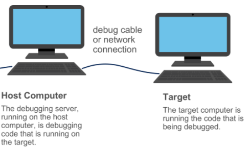
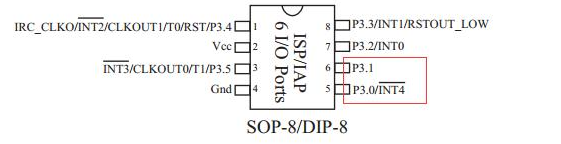
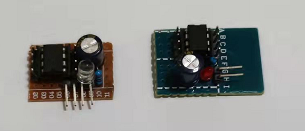
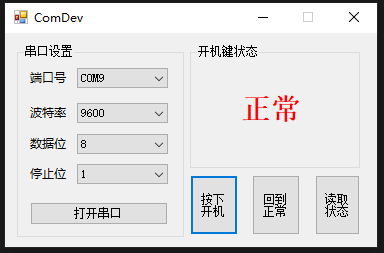

远程重启小工具
对于Windows设备驱动开发者来说，经常就是一台调试机器和一台被调试机器，使用Debug Cable连接或者使用网络连接，就像下图的这种模式。

正常情况下这两台机器都是在我们身边的。那么重启Target机器也就非常的容易。但是有些特殊情况下，这两台机器都不在身边，是通过网络远程连接上去的。对于有时候Target机器想要强制重启就变得有点麻烦。当然，目前有一些物联网的设备支持在Host机器上去强制重启Target，设备配置有点繁琐。考虑到强制重启无非就是使用某种方式让target主板上的Power按钮的电平状态发生变化，那么就可以把Target主板上的power两个针脚引出来，使用开关电路或者继电器进行控制。那么在Host机器上怎么样能控制开关电路呢？最简单的想法就是使用串口，连上一个MCU，然后这个MCU收到串口指令进行相应的动作即可完成这种控制开关电路的目的。好了，基本的原理就是这些。
周末两天连续下雨，没办法出去溜娃，趁着娃在午睡的时间，使用N年前在大学时候买的残存工具和IC来实验一把。首先是MCU端的电路，找到了两片STC15F104E，这款MCU非常的小巧，只有8个引脚。

因为不用外接复位电路和晶振，所以电路的焊接也是非常的简单。焊接了两块小板。(哈哈，不要问我为啥两个上面的LED不一样，因为找不到两个小的LED。)

STC15F104E上没有硬件串口，所以只能软件模拟，官方给了示例的Demo，抄抄就完事了。代码如下，功能就是PC端发过来‘A’那么就P33口就输出高电平，输入‘B’就输出低电平。那么就可以使用P33口控制继电器或者开关电路。
#include "reg52.h"
#include <intrins.H>
#define uchar unsigned char //宏定义字符型变量
#define uint unsigned int //宏定义整型变量
#define BAUD 0XFE80 //9600bps@ 11.0592MHZ
sfr AUXR = 0x8E; //辅助寄存器
sbit RXB = P3^0;
sbit TXB = P3^1;
sbit P33 = P3^3; //定义继电器控制输出脚
uchar dat; //用于存储单片机接收发送缓冲寄存器SBUF里面的内容
uchar TBUF, RBUF;
uchar TDAT, RDAT;
uchar TCNT, RCNT;
uchar TBIT, RBIT;
uint TING, RING;
uint TEND, REND;
void UART_INIT(); //声明函数
uchar t, r; //定义数据类型
uchar but[16]; //数据存储数组
void delay(uchar t)
{
uchar i, j;
for (i = 0; i < t; i++)
{
for (j = 13; j > 0; j--)
{;
}
}
}
void main() {
TMOD = 0X00; //定时器T0设定
AUXR = 0X80; //辅助寄存器
TL0 = BAUD; //十六位寄存器
TH0 = BAUD >> 8; //十六位寄存器
TR0 = 1; //开定时器
ET0 = 1;
PT0 = 1;
EA = 1; //开总中断
UART_INIT(); //串口初始化
while (1) //无线循环
{
if (REND)
{
REND = 0;
r++;
//but[r++&0x0f]=RBUF;
dat = RBUF;
}
if (TEND)
{
if (t != r)
{
uchar k;
k = 10;
TEND = 0;
//TBUF=dat;
switch (dat) //接收数据判断
{
case 'A': P33 = 1; delay(k); TBUF = dat; dat = 0xee; break; // 开，并返回数据值
case 'B': P33 = 0; delay(k); TBUF = dat; dat = 0xee; break; // 关，并返回数据值
case 'C': if (P33 == 1) { TBUF = 'A'; }if (P33 == 0) { TBUF = 'B'; }delay(k); dat = 0xee; break; // 读输出口状态，并返回数据值
case 'D': P33 = !P33; delay(k); TBUF = dat; dat = 0xee; break; // 输出口取反
default:break; // 跳出
}
t++;
//TBUF=but[t++&0x0f];
TING = 1;
}
}
}
}
/********************************************************************
定时器T0
*********************************************************************/
void tm0()interrupt 1 using 1
{
if (RING)
{
if (--RCNT == 0)
{
RCNT = 3;
if (--RBIT == 0)
{
RBUF = RDAT;
RING = 0;
REND = 1;
}
else
{
RDAT >>= 1;
if (RXB)RDAT |= 0X80;
}
}
}
else if (!RXB)
{
RING = 1;
RCNT = 4;
RBIT = 9;
}
if (--TCNT == 0)
{
TCNT = 3;
if (TING)
{
if (TBIT == 0)
{
TXB = 0;
TDAT = TBUF;
TBIT = 9;
}
else
{
TDAT >>= 1;
if (--TBIT == 0)
{
TXB = 1;
TING = 0;
TEND = 1;
}
else
{
TXB = CY;
}
}
}
}
}
void UART_INIT()
{
TING = 0;
RING = 0;
TEND = 1;
REND = 0;
TCNT = 0;
RCNT = 0;
}
硬件上算是完事了，PC上怎么去发送指令给MCU呢，当然使用串口助手之类的工具就完成了。但是这样非常的不优雅，所以还得一个看起来像样子的上位机。使用C#写这样简单的上位机也是非常的轻松的。界面就简单粗暴为主。

主要的代码如下，文末贴上下载链接。
using System;
using System.Collections.Generic;
using System.ComponentModel;
using System.Data;
using System.Drawing;
using System.Linq;
using System.Text;
using System.Threading.Tasks;
using System.Windows.Forms;
using System.IO.Ports;
namespace ComDev
{
public partial class Form1 : Form
{
int[] BaudRateArr = new int[] { 9600, 2400, 4800, 115200 };
int[] DataBitArr = new int[] { 8, 7 };
int[] StopBitArr = new int[] { 1, 2, 3 };
private PortControlHelper pchReceive;
public Form1()
{
InitializeComponent();
pchReceive = new PortControlHelper();
}
private void Btn_open_Click(object sender, EventArgs e)
{
if(!pchReceive.PortState)
{
pchReceive.OpenPort(cb_portNameReceive.Text, int.Parse(cb_baudRate.Text),
int.Parse(cb_dataBit.Text), int.Parse(cb_stopBit.Text), 1000);
pchReceive.OnComReceiveDataHandler += new PortControlHelper.ComReceiveDataHandler(ComReceiveData);
Btn_open.Text = "关闭串口";
}
else
{
pchReceive.OnComReceiveDataHandler -= new PortControlHelper.ComReceiveDataHandler(ComReceiveData);
pchReceive.ClosePort();
Btn_open.Text = "打开串口";
}
}
private void Form1_Load(object sender, EventArgs e)
{
cb_portNameReceive.DataSource = pchReceive.PortNameArr;
cb_baudRate.DataSource = BaudRateArr;
cb_dataBit.DataSource = DataBitArr;
cb_stopBit.DataSource = StopBitArr;
}
private void ComReceiveData(string data)
{
this.Invoke(new EventHandler(delegate
{
if (data.Length > 0)
{
if(data[0] == 'A')
{
string str = "按下";
labelVal.Text = str;
}
else if(data[0] == 'B')
{
string str = "正常";
labelVal.Text = str;
}
}
}));
}
private void Btn_press(object sender, EventArgs e)
{
pchReceive.SendData("A");
}
private void Btn_return(object sender, EventArgs e)
{
pchReceive.SendData("B");
}
private void Btn_get(object sender, EventArgs e)
{
pchReceive.SendData("C");
}
}
}
至此，测试一把，运行正常！哈哈，收拾工具带娃去了~
下载链接：https://github.com/bzhou830/mcu_reboot
- 原文作者：Binean
- 原文链接：https://bzhou830.github.io/post/20211121%E8%BF%9C%E7%A8%8B%E9%87%8D%E5%90%AF%E5%B0%8F%E5%B7%A5%E5%85%B7/
- 版权声明：本作品采用知识共享署名-非商业性使用-禁止演绎 4.0 国际许可协议进行许可，非商业转载请注明出处（作者，原文链接），商业转载请联系作者获得授权。